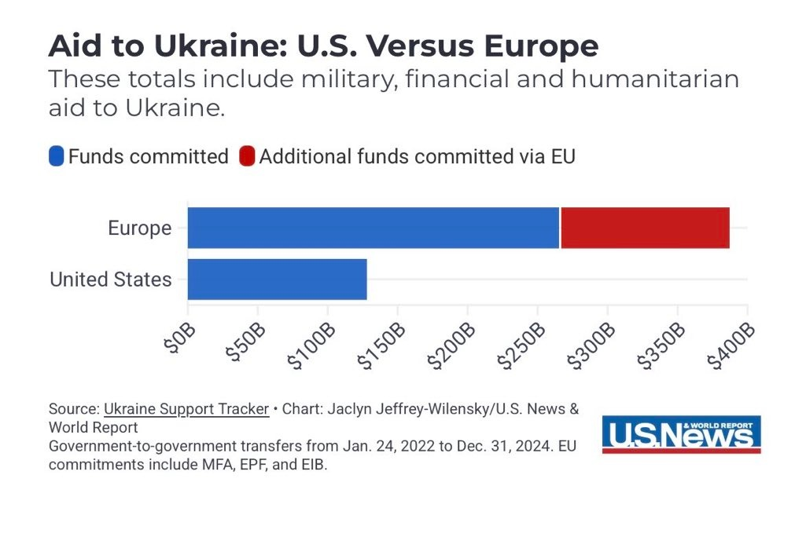

❂🇩🇪🇪🇺🌹𝐀𝐬𝐡𝐥𝐞𝐲 𝐁𝐥𝐨𝐜𝐤🍥🇹🇼🏳️⚧️❀
@bolckAshley
@CPUP2024 有沒有可能，我是說有沒有可能
歐盟的援助總量原本就比美國要高💦

迷人的葱娘酱miku🇨🇳
@CPUP2024
@bolckAshley 把谢谢说将近四十遍了，然后呢？他需要在绝境里面拯救这个国家，而不是说谢谢。
泽连斯基面前只剩下两条路：1️⃣希望欧盟全力援助他，甚至以总量和能力高于原先美国援助的情况。2️⃣希望徐俊萍救他一命。